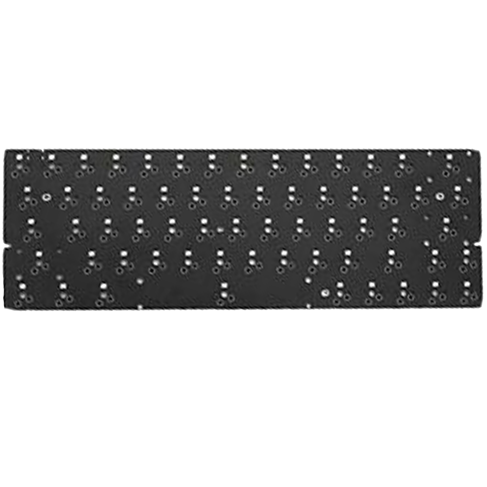

|  | ID80 pcb $15 |
|---|---|
 |
This 75% layout PCB compliments the IDOBAO ID80V2 and features Kailh hot swap sockets, which allow users to quickly change switches without a soldering iron, QMK programmable for custom key commands, and is also outfitted with a USB-C port for fast connectivity,Each key is equipped with white RGB lighting |